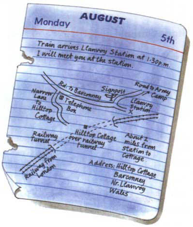
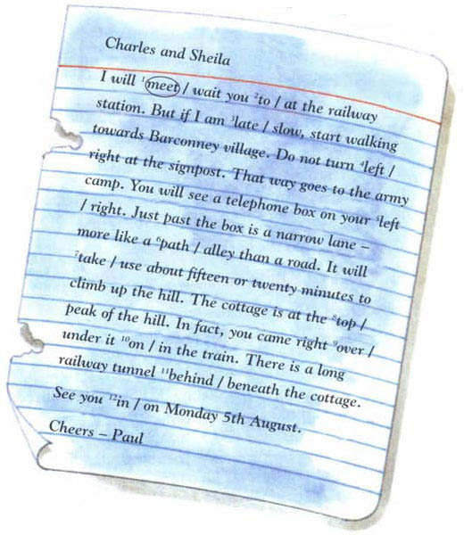
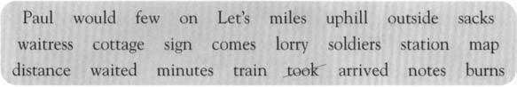

Listen to Part 1:
Đánh dấu vào câu phát biểu đúng.
1 a Paul, Sheila và Charles là sinh viên năm thứ hai tại trường đại học.
b Paul, Sheila và Charles là sinh viên năm thứ ba tại trường đại học.
c Paul, Sheila và Charles là sinh viên năm nhất tại trường đại học.
2 a Llanvoy nằm ở Wales.
b Llanvoy nằm ở Scotland.
c Llanvoy nằm ở Anh.
3 a Khi họ đến nhà tranh, không có ai ở đó.
b Một người đàn ông lạ mặt đã ở nhà tranh khi họ đến.
c Cảnh sát đã ở nhà tranh khi họ đến.
Listen to Part 2:
4 a Người bảo vệ trên tàu đã cho thuốc ngủ vào cà phê của mình.
b Người bảo vệ trên tàu đã bị bắt cóc.
c Người bảo vệ trên tàu đã bị trói và bịt miệng.
5 a Sheila bị trói và bịt miệng.
b Charles bị trói và bịt miệng.
c Paul bị trói và bịt miệng.
6 a Những tên tội phạm đã thay thế những túi tiền bằng những túi giấy.
b Những tên tội phạm đã thay thế những túi tiền bằng những hộp giấy.
c Những tên tội phạm đã thay thế những túi tiền bằng những túi quần áo.
7 a Hai tên tội phạm đã bị bắt giữ.
Listen to Part 3:
b Tất cả những tên tội phạm đã bị bắt giữ.
c Một tên tội phạm đã bị bắt giữ.
Đánh số câu theo thứ tự đúng để tóm tắt câu chuyện.
Paul, Sheila và Charles đang ngồi thi.
Paul và Sheila đã nhốt những tên tội phạm trong trục.
Sheila và Charles đồng ý sẽ dành một tuần với Paul ở Wales.
Những tên tội phạm đã bị cảnh sát bắt giữ.
Sheila thấy những người lính đang cho những túi tiền vào một chiếc xe tải.
Listen to Part 4:
Sheila và Charles phát hiện ra rằng một số tên tội phạm định trộm tiền từ một chuyến tàu.
Khi họ đến nhà tranh, Paul không có ở đó.
Khi những tên tội phạm ra khỏi nhà tranh, Sheila và Charles đã giải cứu Paul.
Sheila và Charles tìm thấy tờ giấy kiểm tra của Paul.
Viết Đ (Đúng) hoặc S (Sai).
1 Tại các trường đại học ở Anh, tháng 4 là tháng thi.
2 Ngôi nhà tranh có điện và điện thoại.
3 Có một quán cà phê bên ngoài nhà ga tại Llanvoy.
4 Sheila và Charles đã uống hai tách trà tại quán cà phê.
Listen to Part 5:
5 Không có hộp điện thoại nào trên bản đồ của Paul.
6 Người lạ họ gặp ở nhà tranh có râu.
7 Sheila và Charles đã đợi trong một tòa nhà cũ trong khi họ quyết định hành động tiếp theo.
8 Sheila vào nhà tranh qua một cửa sổ.
9 Tín hiệu trong đường hầm thường là màu đỏ.
10 Sau khi những tên tội phạm bị bắt, Paul, Sheila và Charles quyết định hủy kỳ nghỉ.
Viết câu hỏi cho câu trả lời.
1 Họ Paul, Sheila và Charles theo học ở đâu?
Listen to Part 6:
Paul, Sheila và Charles theo học tại trường đại học.
2 Kỳ nghỉ hè của họ kéo dài bao lâu
Kỳ nghỉ hè của họ kéo dài ba tháng.
3 Ai
Paul đã gợi ý rằng họ nên đi nghỉ ở Wales.
4 Ở đâu
Họ sẽ ở trong một ngôi nhà tranh.
5 Một ngôi nhà tranh là gì
Một ngôi nhà tranh là một ngôi nhà nhỏ ở vùng nông thôn.
6 Có phải
Listen to Part 7:
Không, ngôi nhà tranh không gần thị trấn - nó gần một ngôi làng.
7 Có
Ngôi nhà tranh có nước nhưng không có điện.
8 Tại sao
Họ muốn ở một nơi xa xôi để thư giãn.
9 Charles và Sheila dự định
Charles và Sheila dự định đến ngôi làng bằng tàu hỏa.
10 Họ dự định
Họ dự định đi bộ từ làng đến nhà tranh.
11 Ai
Listen to Part 8:
Paul đã đưa cho họ một bản đồ.
Khoanh tròn từ đúng


Điền vào chỗ trống. Sử dụng mỗi từ trong ô một lần.

Charles và Sheila 1 took một chuyến tàu từ London đến Llanvoy.
Họ 2 lúc 1:30 chiều. Ngay khi xuống
Listen to Part 9:
3 , họ nhìn quanh để tìm
4 Paul nói rằng anh 5 gặp họ
6 buổi chiều của thứ Hai ngày 5 tháng 8.
Llanvoy là một 7 nhỏ Có rất
8 người xung quanh. Charles và Sheila
9 trong năm phút nhưng không có
10 của Paul.
11 uống một tách cà phê,’ Charles nói. Họ đến một quán cà phê 12 ga tàu. ‘Chúng ta sẽ gặp Paul khi anh ấy 13 ,’ Charles nói.
Họ không thấy Paul. Họ đã thấy một đội quân 14 và những người lính. Họ 15 đang cho
16 vào phía sau xe tải.
Listen to Part 10:
‘Có gì trong những bao tải đó?’ Charles hỏi người 17
‘Tiền giấy,’ nữ phục vụ nói. ‘Tôi cho rằng các ngân hàng gửi những
18 đến đây,’ Charles nói. Quân đội 19 họ.’
Sau hai mươi 20 , Sheila nói, ‘Chúng ta có đi bộ đến 21 không? Chúng ta có 22 ’
‘Được,’ Charles nói. ‘Ngôi 23 cách đây khoảng hai 24 Dặm cuối cùng là25 Không mất của chúng ta nhiều thời gian đâu.’
Sắp xếp các chữ cái để tạo thành các từ hoàn chỉnh câu.
|
1 STARMENRANGE |
Charles và Sheila đã |
|
2 READSTER |
Listen to Part 11: Cảnh sát tất cả những tên tội phạm vào cuối câu chuyện. |
|
3 ELLB |
Họ biết đó là giờ thi khi một kêu to. |
|
4 ELONGBED |
Họ tìm thấy một tờ giấy kiểm tra cho Paul. |
|
5 DEDCIDE |
Khi Paul không đến, họ đi bộ đến nhà tranh. |
|
6 DAGGEG |
Những tên tội phạm Paul để anh không thể nói. |
|
7 DUNGGARI |
Listen to Part 12: Những người lính đang những bao tiền giấy. |
|
8 SPEECA |
Những tên tội phạm đã lên kế hoạch trục. |
|
9 ROYLR |
Những người lính đang xếp bao tải vào phía sau một chiếc |
|
10 ROVE |
Một tiếng chuông khác đổ vang khi kỳ thi đã và các sinh viên được phép ra về. |
|
11 ETOMER |
Đó là một ngôi nhà tranh và cô đơn xa thị trấn. |
|
12 THAFS |
Listen to Part 13: Có một từ đỉnh đồi xuống đường hầm. Nó cho không khí vào. |
|
13 LASIGN |
Tàu dừng lại vì đèn màu đỏ. |
|
14 PRATPED |
Họ đậy nắp lối ra trục. Những tên tội phạm đã bị bên trong. |
|
15 NELNUT |
Không ai nhìn thấy vụ cướp xảy ra vì tàu đang ở trong |
Đánh dấu vào câu trả lời đúng nhất.
Listen to Part 14:
1 Những tên tội phạm đã làm gì với Paul?
a Họ đã bắt giữ anh ta.
b Họ đã giam giữ anh ta.
c Họ đã bắt cóc anh ta.
d Họ đã giết anh ta.
2 Tại sao những tên tội phạm muốn sử dụng Hilltop Cottage?
a Nó có tầm nhìn đẹp.
Listen to Part 15:
b Họ có thể thấy cảnh sát đến.
c Nó nằm trên đường hầm đường sắt.
d Nó yên tĩnh và biệt lập.
3 Charles đã làm gì trong khi Sheila và Paul giam giữ những tên tội phạm?
a Anh ta đã đến đồn cảnh sát.
b Anh ta chạy đến hộp điện thoại và gọi cho cảnh sát.
c Anh ta ở lại trong nhà tranh.
Listen to Part 16:
d Anh ta đợi ở dưới đáy trục.
4 Từ nào lạc quẻ?
a Thắt.
b Dao.
c Diều.
d Gõ.
Listen to Part 17:
5 Bạn không tạo ra điều gì sau đây?
a Một sai lầm.
b Một quyết định.
c Một cuộc sống.
d Một tai nạn.
6 Những tên tội phạm đã đưa gì cho người bảo vệ của tàu?
a Tiền trong túi.
b Dây thừng và bịt miệng.
c Bao nhựa.
d Thuốc ngủ.